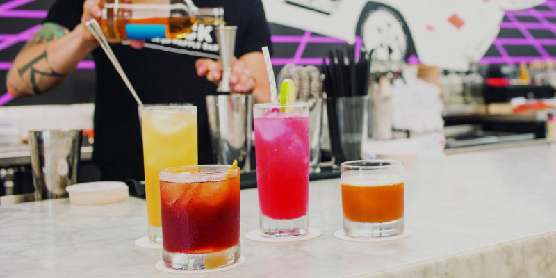
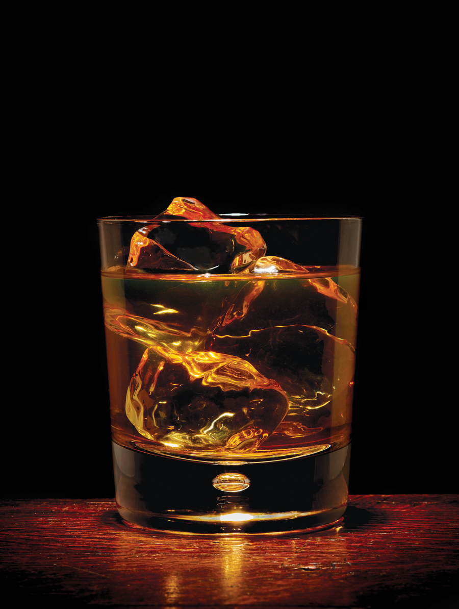

<!DOCTYPE html>
<html>
<head>
    <meta charset="UTF-8">

    <!-- CSS Files -->
    <link rel="stylesheet" href="css/reset.css"/>
    <link rel="stylesheet" href="css/style.css"/>

    <!-- Google Fonts -->
    <link href="https://fonts.googleapis.com/css?family=PT+Serif:400,700" rel="stylesheet">

    <!-- Typekit -->
    <link rel="stylesheet" href="https://use.typekit.net/xcs0vit.css">

    <script type="text/javascript" src="js/jquery-3.2.1.min.js"></script>
    <script type="text/javascript" src="js/script.js"></script>


    <title>2017 Best Breweries | Minnesota Monthly</title>

</head>

<body>

<div id="wrapper_two">

    <!-- BEGIN FIXED HEADER -->
    <div class="logo_badge">
        
        <p class=logo_text> <span style="font-family: 'PT Serif'; font-weight:bold; font-style: italic;">
                            minnesota </span> <br> monthly </p>
    </div>

    <div class="fixed_text">
        <p class="top_text" style="color: #1e1e1e;" id="subject">check it out</p>
        

    </div>


    <div></div>
    <!-- END FIXED HEADER -->


    <!-- BEGIN NAV MENU -->
    <div id="menu">
        <a class="menu_text" style="margin-top: 80px;" href="index.html">home</a>
        <a class="menu_text" href="check-it-out.html">check it out</a>
        <a class="menu_text" href="#travel">travel & outdoors</a>
        <a class="menu_text" href="#arts">arts & entertainment</a>
        <a class="menu_text" href="#food">food & drink</a>
        <a class="menu_text" href="#mn">mn life</a>
        <a class="menu_text" href="#events">events</a>
    </div>
    <!-- END NAV MENU -->

    <!-- ARTICLE SECTION -->

    

    <div class="section_two">

        <!-- BEGIN COLUMN 1-->
        <div class="column" style="margin-left: 100px;">
            <p class="article_headline">2017’s Top Breweries,<br> Wineries, Distilleries, <br> and Cideries</p>

            <p class="sub date" style="color:#1e1e1e; line-height: 18px;">Jason Derusha, David Mahoney, Quinton Skinner,
                and Joy Summers</p>
            <div class="highlight">
            <p class="sub date" style="color:#1e1e1e;">October 22, 2017</p></div>

            <div>
                
            </div>

            <p class="sub date" style="color:#1e1e1e; line-height: 18px;">Russian Expat in Norway from <br> Vikre
                Distillery //</p>
            <div class="highlight">
            <p class="sub date" style="color:#1e1e1e;">Photo by Terry Brennan</p></div>
        </div> <!-- END COLUMN 1-->


        <!-- BEGIN COLUMN 2-->
        <div class="column">
            <div class="highlight article_headline" style="font-size: 22px; margin-top: 130px;">“Today, Minnesota is </div>
            <div class="highlight article_headline" style="font-size: 22px; margin-top: 10px;">home to more than 100 </div>
            <div class="highlight article_headline" style="font-size: 22px; margin-top: 10px;">production breweries.”</div>

            <p class="paragraph">
                Ten years ago, in 2007, St. Paul’s Flat Earth Brewing filled its first kegs, joining recent startups Surly (in Brooklyn Center) and Brau Brothers (then in Lucan) in the first wave of new local microbrewery openings. They joined long-timers such as Summit (St. Paul) and Schell’s (New Ulm) to bring the total number of production breweries in Minnesota to eight.
            </p>

            <p class="paragraph">
                Of the roughly two dozen wineries in the state at the time, most were busy replanting their vineyards with the newly bred, cold-hardy Marquette grape. And there was only one Minnesota distillery, Phillips, in Princeton, dedicated to making spirits (unless you count an ethanol plant in Benson that made vodka on the side when it wasn’t producing fuel).
            </p>

            <p class="paragraph">
                Today, Minnesota is home to more than 100 production breweries—most of them equipped with taprooms where customers can sip a pint of beer just yards from where it was made—as well as another 30 or so brewpubs where full food menus aid and abet the malt madness. (These breweries range from massive operations such as Surly, managing a full-service restaurant and selling at retail, to small operators such as Dangerous Man, offering their beer only through their taprooms.)
            </p>

        </div><!-- END COLUMN 2-->

        <!-- BEGIN COLUMN 3-->
        <div class="column">

            <p class="paragraph" style="margin-top: 130px;">
                There are now upwards of 60 wineries in the state, many of which have banded together into regional tasting trails that lure oenophiles from one winery to the next. And most of the more than a dozen craft distilleries that have cropped up around the state now have cocktail rooms that give customers a chance to sample their spirits mixed in the manner for which they were intended.
            </p>

            <p class="paragraph">
                The tsunami of brews and booze was touched off in large part by the passage of the so-called “Surly bill” in 2011. That legislation not only cleared the way for small breweries to sell beer by the glass onsite, sweeping aside restrictive laws that dated back to the repeal of Prohibition, but also slashed the license fee for microdistilleries from a prohibitively expensive $30,000 to a relatively affordable $1,100. As for the winery boom, much of the credit goes not to the legislature but to another public institution: the University of Minnesota, which has developed several of the most commonly planted cold-hardy grape varieties—including Marquette, the latest Great Red Hope of northern winemaking. The growing interest in agritourism has also spurred the development of new vineyards and wineries, as urban locavores comb the countryside in search of pastoral pleasures.
            </p>

            <p class="paragraph">
                Minnesotans’ fascination with locally grown farm products, dovetailing with the national local-food trend of the past decade, hasn’t been lost on the state’s new distillers. For example, Minneapolis’ Du Nord Craft Spirits sources non-GMO corn from co-owner Shanelle Montana’s family farm in Cold Spring. Far North Spirits has done them one better: The distillery is located on co-owner Michael Swanson’s family farm in Hallock, within sight of the fields where their grain is grown.
            </p>

        </div><!-- END COLUMN 3-->


    </div><!-- END SECTION TWO -->


</div>


</body>
</html>